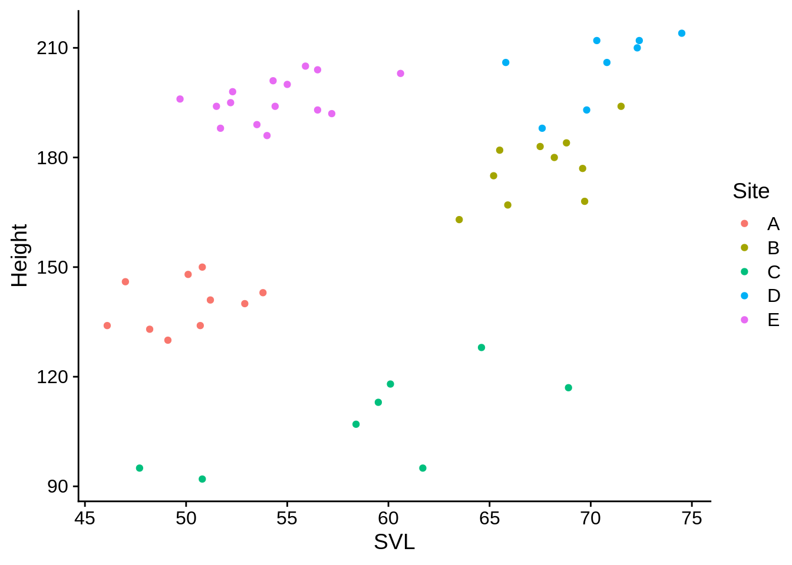
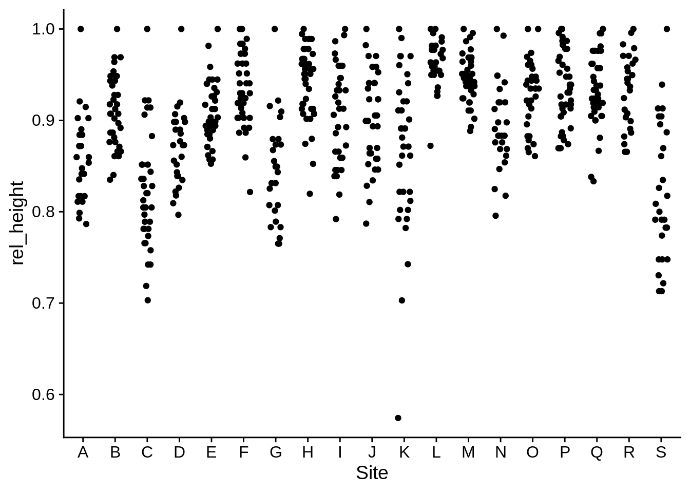

6 Data manipulation with dplyr
Let’s talk about data manipulation. We’ll be using the dplyr package, which is part of tidyverse. You can find a quick reference page under Help -> Cheatsheets in RStudio. First, we need to load our packages & data.
library(tidyverse)
library(cowplot)
theme_set(theme_cowplot())
lizards <- read_csv("example_data/anoles.csv") # See Appendix A if you don't have this data6.1 The Pipe (|>)
The pipe ( |> ) operator strings functions together in a sequence. It takes the result of the function on its left and makes it the first argument to the function on the right. Let’s say you wanted to calculate the base-12 log of the mean of the square root of the absolute value of numbers between -50 and 50. The traditional way to write that would be:
log(mean(sqrt(abs(-50:50))), base = 12)## [1] 0.6256332This is rather difficult to read; it has a lot of nested parentheses, and you need to start from the inside and work your way out to see what’s happening. With the pipe, you could re-write it like this:
-50:50 |> abs() |> sqrt() |>
mean() |> log(base = 12)## [1] 0.6256332Using pipes can make your code much clearer, and is quite helpful when creating a sequence of related transformations on data.
In RStudio, you can insert the pipe by pressing Ctrl+Shift+M.
When looking for help online, you may also find a different version of the pipe (%>%); this is an older version of the pipe that is part of the tidyverse. It works similarly to |> but has a number of technical drawbacks. In most cases, you can use them interchangeably.
6.2 Adding/modifying columns (mutate)
The mutate() function creates a new column in a data frame. For example, the total length of a lizard is defined as its snout-vent length (SVL) plus it’s tail length.
mutate(.data = lizards, total_length = SVL + Tail) |>
View() # Use View to look at the results in RStudio| Site | Color_morph | Limb | Mass | Diameter | Height | SVL | Tail | Perch_type | total_length |
|---|---|---|---|---|---|---|---|---|---|
| A | Green | 14.3 | 6.46 | 8 | 164 | 61.8 | 43.9 | Other | 105.7 |
| A | Brown | 12.3 | 5.82 | 18 | 151 | 57.1 | 42.2 | Tree | 99.3 |
| A | Blue | 10.5 | 4.29 | 36 | 130 | 49.1 | 25.0 | Building | 74.1 |
| A | Brown | 10.3 | 5.29 | 31 | 131 | 51.2 | 38.2 | Tree | 89.4 |
| A | Brown | 10.9 | 5.69 | 20 | 138 | 51.5 | 46.9 | Shrub | 98.4 |
| A | Brown | 10.4 | 5.84 | 25 | 137 | 45.3 | 59.0 | Shrub | 104.3 |
| A | Green | 11.1 | 5.91 | 7 | 138 | 49.7 | 47.6 | Building | 97.3 |
| A | Brown | 10.0 | 5.09 | 20 | 141 | 48.0 | 34.9 | Tree | 82.9 |
| A | Brown | 12.3 | 7.20 | 19 | 129 | 54.9 | 61.0 | Tree | 115.9 |
| A | Brown | 11.2 | 6.66 | 15 | 134 | 52.7 | 50.4 | Tree | 103.1 |
This uses the lizards data to create a new column, total_length. Within the mutate command, you can reference columns directly by their names (like you do for aes() in ggplot). Mutate can create multiple new columns in a single command.
mutate(lizards, # generally, the .data argument is not named
# All subsequent arguments refer to new columns
total_length = SVL + Tail,
rel_limb = Limb/SVL,
log_total_length = log(total_length),
# You can also change an existing column by saving something to its name
Color_morph = paste(Color_morph, "morph") # add "morph" after each color
) |> View()| Site | Color_morph | Limb | Mass | Diameter | Height | SVL | Tail | Perch_type | total_length | rel_limb | log_total_length |
|---|---|---|---|---|---|---|---|---|---|---|---|
| A | Green morph | 14.3 | 6.46 | 8 | 164 | 61.8 | 43.9 | Other | 105.7 | 0.2313916 | 4.660605 |
| A | Brown morph | 12.3 | 5.82 | 18 | 151 | 57.1 | 42.2 | Tree | 99.3 | 0.2154116 | 4.598146 |
| A | Blue morph | 10.5 | 4.29 | 36 | 130 | 49.1 | 25.0 | Building | 74.1 | 0.2138493 | 4.305415 |
| A | Brown morph | 10.3 | 5.29 | 31 | 131 | 51.2 | 38.2 | Tree | 89.4 | 0.2011719 | 4.493121 |
| A | Brown morph | 10.9 | 5.69 | 20 | 138 | 51.5 | 46.9 | Shrub | 98.4 | 0.2116505 | 4.589041 |
| A | Brown morph | 10.4 | 5.84 | 25 | 137 | 45.3 | 59.0 | Shrub | 104.3 | 0.2295806 | 4.647271 |
| A | Green morph | 11.1 | 5.91 | 7 | 138 | 49.7 | 47.6 | Building | 97.3 | 0.2233400 | 4.577799 |
| A | Brown morph | 10.0 | 5.09 | 20 | 141 | 48.0 | 34.9 | Tree | 82.9 | 0.2083333 | 4.417635 |
| A | Brown morph | 12.3 | 7.20 | 19 | 129 | 54.9 | 61.0 | Tree | 115.9 | 0.2240437 | 4.752728 |
| A | Brown morph | 11.2 | 6.66 | 15 | 134 | 52.7 | 50.4 | Tree | 103.1 | 0.2125237 | 4.635699 |
Note that this doesn’t modify the lizards dataset. It creates a new data frame that has an additional column. You’ll need to save it as a new variable to use it.
lizards_full = lizards |> # It's also traditional to pipe the data argument in
mutate(total_length = SVL + Tail,
rel_limb = Limb/SVL,
log_total_length = log(total_length)) Tidyverse functions are designed to be piped together. For example:
lizards |>
mutate(Total_length = SVL + Tail) |>
ggplot(aes(x = Site, y = Total_length)) +
geom_boxplot()
Creating a quick plot at the end of a data manipulation step can be a good way to get a visual idea of what you’re doing.
Here are a few other helpful things to do with mutate():
lizards |> mutate(
intercept = 1, # Add a constant
row_number = 1:n() # the n() function tells you how many rows are
# in the current data frame (it only works in mutate & related functions)
) |> View()| Site | Color_morph | Limb | Mass | Diameter | Height | SVL | Tail | Perch_type | intercept | row_number |
|---|---|---|---|---|---|---|---|---|---|---|
| A | Green | 14.3 | 6.46 | 8 | 164 | 61.8 | 43.9 | Other | 1 | 1 |
| A | Brown | 12.3 | 5.82 | 18 | 151 | 57.1 | 42.2 | Tree | 1 | 2 |
| A | Blue | 10.5 | 4.29 | 36 | 130 | 49.1 | 25.0 | Building | 1 | 3 |
| A | Brown | 10.3 | 5.29 | 31 | 131 | 51.2 | 38.2 | Tree | 1 | 4 |
| A | Brown | 10.9 | 5.69 | 20 | 138 | 51.5 | 46.9 | Shrub | 1 | 5 |
| A | Brown | 10.4 | 5.84 | 25 | 137 | 45.3 | 59.0 | Shrub | 1 | 6 |
| A | Green | 11.1 | 5.91 | 7 | 138 | 49.7 | 47.6 | Building | 1 | 7 |
| A | Brown | 10.0 | 5.09 | 20 | 141 | 48.0 | 34.9 | Tree | 1 | 8 |
| A | Brown | 12.3 | 7.20 | 19 | 129 | 54.9 | 61.0 | Tree | 1 | 9 |
| A | Brown | 11.2 | 6.66 | 15 | 134 | 52.7 | 50.4 | Tree | 1 | 10 |
Here are a few exercises to try:
- Add a column to the
lizardsdataset that gives the lizard’s height relative to the maximum height of any lizard (hint: use max(Height) in a mutate command to find that value).
- Calculate perch circumference
(Diameter * pi), then pipe that result into a scatter plot of relative limb length vs. circumference. Note thatpiis a pre-defined variable in R.
6.3 Subsetting by row (filter)
Let’s define “large lizards” as:
lizards |>
mutate(large = SVL > 60) |>
View()| Site | Color_morph | Limb | Mass | Diameter | Height | SVL | Tail | Perch_type | large |
|---|---|---|---|---|---|---|---|---|---|
| A | Green | 14.3 | 6.46 | 8 | 164 | 61.8 | 43.9 | Other | TRUE |
| A | Brown | 12.3 | 5.82 | 18 | 151 | 57.1 | 42.2 | Tree | FALSE |
| A | Blue | 10.5 | 4.29 | 36 | 130 | 49.1 | 25.0 | Building | FALSE |
| A | Brown | 10.3 | 5.29 | 31 | 131 | 51.2 | 38.2 | Tree | FALSE |
| A | Brown | 10.9 | 5.69 | 20 | 138 | 51.5 | 46.9 | Shrub | FALSE |
| A | Brown | 10.4 | 5.84 | 25 | 137 | 45.3 | 59.0 | Shrub | FALSE |
| A | Green | 11.1 | 5.91 | 7 | 138 | 49.7 | 47.6 | Building | FALSE |
| A | Brown | 10.0 | 5.09 | 20 | 141 | 48.0 | 34.9 | Tree | FALSE |
| A | Brown | 12.3 | 7.20 | 19 | 129 | 54.9 | 61.0 | Tree | FALSE |
| A | Brown | 11.2 | 6.66 | 15 | 134 | 52.7 | 50.4 | Tree | FALSE |
The large column is a logical vector, with TRUE & FALSE values. We can use logical vectors to get a subset of the data frame where the vector is TRUE with the filter() function.
lizards |>
mutate(large = SVL > 60) |>
filter(large) |>
View()| Site | Color_morph | Limb | Mass | Diameter | Height | SVL | Tail | Perch_type | large |
|---|---|---|---|---|---|---|---|---|---|
| A | Green | 14.3 | 6.46 | 8 | 164 | 61.8 | 43.9 | Other | TRUE |
| B | Brown | 13.7 | 7.57 | 23 | 162 | 67.0 | 73.8 | Building | TRUE |
| B | Green | 14.4 | 7.75 | 8 | 174 | 68.8 | 65.4 | Tree | TRUE |
| B | Blue | 13.8 | 7.61 | 35 | 163 | 63.5 | 69.7 | Building | TRUE |
| B | Green | 15.2 | 8.27 | 14 | 188 | 67.0 | 50.6 | Tree | TRUE |
| B | Green | 14.1 | 6.73 | 17 | 176 | 64.8 | 49.0 | Tree | TRUE |
| B | Blue | 14.2 | 8.43 | 29 | 177 | 69.6 | 85.3 | Tree | TRUE |
| B | Green | 14.3 | 13.30 | 9 | 179 | 68.3 | 74.0 | Tree | TRUE |
| B | Blue | 14.4 | 7.71 | 33 | 182 | 65.5 | 59.6 | Shrub | TRUE |
| B | Brown | 14.1 | 7.95 | 32 | 178 | 70.1 | 69.0 | Tree | TRUE |
Note that only TRUE values of large remain the the data frame. It’s not actually necessary to create a column before filtering:
lizards |> filter(SVL > 60) |> View()| Site | Color_morph | Limb | Mass | Diameter | Height | SVL | Tail | Perch_type |
|---|---|---|---|---|---|---|---|---|
| A | Green | 14.3 | 6.46 | 8 | 164 | 61.8 | 43.9 | Other |
| B | Brown | 13.7 | 7.57 | 23 | 162 | 67.0 | 73.8 | Building |
| B | Green | 14.4 | 7.75 | 8 | 174 | 68.8 | 65.4 | Tree |
| B | Blue | 13.8 | 7.61 | 35 | 163 | 63.5 | 69.7 | Building |
| B | Green | 15.2 | 8.27 | 14 | 188 | 67.0 | 50.6 | Tree |
| B | Green | 14.1 | 6.73 | 17 | 176 | 64.8 | 49.0 | Tree |
| B | Blue | 14.2 | 8.43 | 29 | 177 | 69.6 | 85.3 | Tree |
| B | Green | 14.3 | 13.30 | 9 | 179 | 68.3 | 74.0 | Tree |
| B | Blue | 14.4 | 7.71 | 33 | 182 | 65.5 | 59.6 | Shrub |
| B | Brown | 14.1 | 7.95 | 32 | 178 | 70.1 | 69.0 | Tree |
The filter() command returns every row where its logical conditions are TRUE. Conditional statements that create logical statements include the following:
x == y: TRUE if x equals y (This is not the same asx = y)!x != y: TRUE if x does not equal yx > y: x >= y;x < y: x <= y;between(x, y, z): TRUE if x >= y AND x <= zis.na(x): TRUE if x is a missing value (NA)x %in% y: TRUE if x is an element in y
Note that all of these (except for x %in% y) are vectorized.
c(1, 2) == c(2, 3) - 1
## [1] TRUE TRUE
c(1, 2, 3) == c(1, 4, 9)
## [1] TRUE FALSE FALSE
c(1, 2) == c(2, 1) # positions don't match
## [1] FALSE FALSE
c(1, 2, 3, 4, 5) %in% c(1, 2) # for %in%, position only matters for the left argument
## [1] TRUE TRUE FALSE FALSE FALSEYou can also combine and modify logical values:
x & y: returns TRUE if both x and y are TRUEx | y: returns TRUE if either x or y are TRUE!x: returns the opposite of x; this one is particularly useful to combine with other logical functions; for examplefilter(data, !is.na(x))will return all rows wherexis not a missing value.
If you give filter() more than one condition, it applies all of them by combining them with &.
lizards |>
filter(Color_morph == "Blue",
Site %in% c("A", "B", "C", "D", "E")) |>
ggplot(aes(x = SVL, y = Height, color = Site)) + geom_point()
Exercises:
- Print a dataframe that shows only the lizards higher than 150 cm. How many are there (the console printout should tell you).
- How many lizards perching on trees or shrubs are not brown? Visualize the height to diameter relationship between them. Hint: you can use either
%in%or a combination of==and|to meet the first condition.
6.4 Subsetting by column (select)
You can subset certain columns with the select() function. There are several ways to do this. The simplest is by name:
lizards |> select(Site, Color_morph, SVL) |> View()| Site | Color_morph | SVL |
|---|---|---|
| A | Green | 61.8 |
| A | Brown | 57.1 |
| A | Blue | 49.1 |
| A | Brown | 51.2 |
| A | Brown | 51.5 |
| A | Brown | 45.3 |
| A | Green | 49.7 |
| A | Brown | 48.0 |
| A | Brown | 54.9 |
| A | Brown | 52.7 |
You can also select by position:
lizards |> select(1, 2, 7) |> View()| Site | Color_morph | SVL |
|---|---|---|
| A | Green | 61.8 |
| A | Brown | 57.1 |
| A | Blue | 49.1 |
| A | Brown | 51.2 |
| A | Brown | 51.5 |
| A | Brown | 45.3 |
| A | Green | 49.7 |
| A | Brown | 48.0 |
| A | Brown | 54.9 |
| A | Brown | 52.7 |
This is more useful for ranges of values:
lizards |> select(1:4, 7) |> View()| Site | Color_morph | Limb | Mass | SVL |
|---|---|---|---|---|
| A | Green | 14.3 | 6.46 | 61.8 |
| A | Brown | 12.3 | 5.82 | 57.1 |
| A | Blue | 10.5 | 4.29 | 49.1 |
| A | Brown | 10.3 | 5.29 | 51.2 |
| A | Brown | 10.9 | 5.69 | 51.5 |
| A | Brown | 10.4 | 5.84 | 45.3 |
| A | Green | 11.1 | 5.91 | 49.7 |
| A | Brown | 10.0 | 5.09 | 48.0 |
| A | Brown | 12.3 | 7.20 | 54.9 |
| A | Brown | 11.2 | 6.66 | 52.7 |
You can also use character vectors:
lizards |> select("Site", "Color_morph", "SVL") |> View()| Site | Color_morph | SVL |
|---|---|---|
| A | Green | 61.8 |
| A | Brown | 57.1 |
| A | Blue | 49.1 |
| A | Brown | 51.2 |
| A | Brown | 51.5 |
| A | Brown | 45.3 |
| A | Green | 49.7 |
| A | Brown | 48.0 |
| A | Brown | 54.9 |
| A | Brown | 52.7 |
Note that if you want to use a variable that has column names saved as a character vector, you’ll need to use a helper function (all_of) to tell select that you want to look for the contents of the variable, not the name of the variable:
select_vars = c("Site", "Color_morph", "SVL")
lizards |>
select(all_of(select_vars)) |> # without all_of, it would try to look for a column called "select_vars"
View()| Site | Color_morph | SVL |
|---|---|---|
| A | Green | 61.8 |
| A | Brown | 57.1 |
| A | Blue | 49.1 |
| A | Brown | 51.2 |
| A | Brown | 51.5 |
| A | Brown | 45.3 |
| A | Green | 49.7 |
| A | Brown | 48.0 |
| A | Brown | 54.9 |
| A | Brown | 52.7 |
You can remove columns by using a negative sign. (Note that negative signs are ignored if you have any names without negative signs).
lizards |> select(-Color_morph, -Limb) |> View()| Site | Mass | Diameter | Height | SVL | Tail | Perch_type |
|---|---|---|---|---|---|---|
| A | 6.46 | 8 | 164 | 61.8 | 43.9 | Other |
| A | 5.82 | 18 | 151 | 57.1 | 42.2 | Tree |
| A | 4.29 | 36 | 130 | 49.1 | 25.0 | Building |
| A | 5.29 | 31 | 131 | 51.2 | 38.2 | Tree |
| A | 5.69 | 20 | 138 | 51.5 | 46.9 | Shrub |
| A | 5.84 | 25 | 137 | 45.3 | 59.0 | Shrub |
| A | 5.91 | 7 | 138 | 49.7 | 47.6 | Building |
| A | 5.09 | 20 | 141 | 48.0 | 34.9 | Tree |
| A | 7.20 | 19 | 129 | 54.9 | 61.0 | Tree |
| A | 6.66 | 15 | 134 | 52.7 | 50.4 | Tree |
lizards |> select(-(1:5)) |> View()| Height | SVL | Tail | Perch_type |
|---|---|---|---|
| 164 | 61.8 | 43.9 | Other |
| 151 | 57.1 | 42.2 | Tree |
| 130 | 49.1 | 25.0 | Building |
| 131 | 51.2 | 38.2 | Tree |
| 138 | 51.5 | 46.9 | Shrub |
| 137 | 45.3 | 59.0 | Shrub |
| 138 | 49.7 | 47.6 | Building |
| 141 | 48.0 | 34.9 | Tree |
| 129 | 54.9 | 61.0 | Tree |
| 134 | 52.7 | 50.4 | Tree |
You can also use the where helper function to select columns based on their characteristics. For example, the is.numeric function returns TRUE if its argument is a number; you can use it to select all numeric columns.
lizards |>
select(where(is.numeric)) |>
View()| Limb | Mass | Diameter | Height | SVL | Tail |
|---|---|---|---|---|---|
| 14.3 | 6.46 | 8 | 164 | 61.8 | 43.9 |
| 12.3 | 5.82 | 18 | 151 | 57.1 | 42.2 |
| 10.5 | 4.29 | 36 | 130 | 49.1 | 25.0 |
| 10.3 | 5.29 | 31 | 131 | 51.2 | 38.2 |
| 10.9 | 5.69 | 20 | 138 | 51.5 | 46.9 |
| 10.4 | 5.84 | 25 | 137 | 45.3 | 59.0 |
| 11.1 | 5.91 | 7 | 138 | 49.7 | 47.6 |
| 10.0 | 5.09 | 20 | 141 | 48.0 | 34.9 |
| 12.3 | 7.20 | 19 | 129 | 54.9 | 61.0 |
| 11.2 | 6.66 | 15 | 134 | 52.7 | 50.4 |
You could do the same for text or logical vectors with is.character or is.logical, respectively. Note that there aren’t parentheses after is.numeric in the above code. that’s because we aren’t calling it on any particular value; instead, the where function calls it on every column of the data frame, and we’re just telling it what function to use.
There’s a lot more you can do with this if you want to get fancy; the documentation is available at ?tidyselect::language.
6.5 Sorting by columns (arrange)
You can use arrange() to sort by one or more column values. To sort lizards from lowest to highest mass:
lizards |> arrange(Mass) |> View()| Site | Color_morph | Limb | Mass | Diameter | Height | SVL | Tail | Perch_type |
|---|---|---|---|---|---|---|---|---|
| A | Blue | 10.5 | 4.29 | 36 | 130 | 49.1 | 25.0 | Building |
| L | Brown | 9.5 | 4.33 | 22 | 209 | 40.5 | 34.7 | Other |
| H | Blue | 9.4 | 4.42 | 28 | 161 | 40.3 | 41.5 | Tree |
| H | Green | 9.3 | 4.82 | 14 | 150 | 44.5 | 43.7 | Tree |
| L | Blue | 9.2 | 4.82 | 31 | 191 | 42.6 | 44.5 | Tree |
| L | Blue | 10.5 | 4.82 | 31 | 215 | 44.6 | 39.9 | Shrub |
| L | Green | 10.2 | 4.85 | 15 | 214 | 45.2 | 35.6 | Tree |
| K | Green | 9.7 | 4.89 | 18 | 58 | 47.7 | 23.7 | Other |
| H | Blue | 10.4 | 4.96 | 37 | 174 | 43.3 | 40.0 | Shrub |
| H | Green | 10.8 | 4.99 | 6 | 166 | 47.8 | 33.0 | Tree |
If you wish to sort from highest to lowest, use the desc() helper function:
lizards |> arrange(desc(Mass)) |> View()| Site | Color_morph | Limb | Mass | Diameter | Height | SVL | Tail | Perch_type |
|---|---|---|---|---|---|---|---|---|
| B | Green | 14.3 | 13.30 | 9 | 179 | 68.3 | 74.0 | Tree |
| J | Brown | 16.7 | 11.83 | 31 | 145 | 80.4 | 69.2 | Other |
| N | Brown | 15.8 | 10.13 | 25 | 130 | 73.2 | 90.0 | Tree |
| M | Brown | 11.9 | 9.79 | 24 | 210 | 56.0 | 70.7 | Tree |
| P | Blue | 15.4 | 9.74 | 41 | 221 | 76.3 | 95.7 | Tree |
| O | Brown | 16.4 | 9.63 | 24 | 217 | 74.3 | 65.7 | Tree |
| P | Brown | 15.4 | 9.58 | 29 | 216 | 70.4 | 81.6 | Tree |
| N | Blue | 14.9 | 9.54 | 38 | 128 | 68.4 | 67.5 | Tree |
| J | Green | 17.2 | 9.35 | 0 | 166 | 79.1 | 79.9 | Tree |
| O | Blue | 13.9 | 9.35 | 27 | 203 | 67.8 | 77.8 | Shrub |
When you have categorical variables, you’ll often have ties:
lizards |> arrange(Site) |> View()| Site | Color_morph | Limb | Mass | Diameter | Height | SVL | Tail | Perch_type |
|---|---|---|---|---|---|---|---|---|
| A | Green | 14.3 | 6.46 | 8 | 164 | 61.8 | 43.9 | Other |
| A | Brown | 12.3 | 5.82 | 18 | 151 | 57.1 | 42.2 | Tree |
| A | Blue | 10.5 | 4.29 | 36 | 130 | 49.1 | 25.0 | Building |
| A | Brown | 10.3 | 5.29 | 31 | 131 | 51.2 | 38.2 | Tree |
| A | Brown | 10.9 | 5.69 | 20 | 138 | 51.5 | 46.9 | Shrub |
| A | Brown | 10.4 | 5.84 | 25 | 137 | 45.3 | 59.0 | Shrub |
| A | Green | 11.1 | 5.91 | 7 | 138 | 49.7 | 47.6 | Building |
| A | Brown | 10.0 | 5.09 | 20 | 141 | 48.0 | 34.9 | Tree |
| A | Brown | 12.3 | 7.20 | 19 | 129 | 54.9 | 61.0 | Tree |
| A | Brown | 11.2 | 6.66 | 15 | 134 | 52.7 | 50.4 | Tree |
In this case, it’s helpful to sort by multiple variables; the following code orders by Site, then by color morph within site, then by SVL.
lizards |> arrange(Site, Color_morph, SVL) |> View()| Site | Color_morph | Limb | Mass | Diameter | Height | SVL | Tail | Perch_type |
|---|---|---|---|---|---|---|---|---|
| A | Blue | 10.6 | 5.53 | 36 | 134 | 46.1 | 50.3 | Other |
| A | Blue | 10.9 | 5.73 | 29 | 146 | 47.0 | 56.5 | Other |
| A | Blue | 10.1 | 5.40 | 27 | 133 | 48.2 | 45.7 | Tree |
| A | Blue | 10.5 | 4.29 | 36 | 130 | 49.1 | 25.0 | Building |
| A | Blue | 10.8 | 6.02 | 30 | 148 | 50.1 | 57.9 | Tree |
| A | Blue | 11.4 | 5.72 | 32 | 134 | 50.7 | 48.8 | Tree |
| A | Blue | 12.1 | 5.67 | 35 | 150 | 50.8 | 51.7 | Other |
| A | Blue | 10.8 | 5.27 | 30 | 141 | 51.2 | 43.3 | Tree |
| A | Blue | 12.5 | 6.18 | 28 | 140 | 52.9 | 48.4 | Tree |
| A | Blue | 11.0 | 6.68 | 31 | 143 | 53.8 | 49.5 | Shrub |
One particularly useful thing you can do with this is create rankings.
lizards |>
arrange(desc(SVL)) |>
mutate(size_rank = 1:n()) |>
View()| Site | Color_morph | Limb | Mass | Diameter | Height | SVL | Tail | Perch_type | size_rank |
|---|---|---|---|---|---|---|---|---|---|
| O | Blue | 18.7 | 9.33 | 43 | 230 | 84.5 | 88.9 | Tree | 1 |
| J | Green | 18.2 | 8.65 | 2 | 169 | 84.3 | 76.3 | Tree | 2 |
| J | Brown | 16.4 | 9.21 | 30 | 147 | 81.0 | 86.8 | Shrub | 3 |
| J | Brown | 16.7 | 11.83 | 31 | 145 | 80.4 | 69.2 | Other | 4 |
| O | Brown | 17.3 | 8.04 | 23 | 223 | 80.2 | 56.6 | Other | 5 |
| R | Green | 17.1 | 8.83 | 6 | 231 | 80.0 | 71.1 | Tree | 6 |
| O | Blue | 16.1 | 8.50 | 36 | 221 | 79.3 | 73.8 | Tree | 7 |
| J | Green | 17.2 | 9.35 | 0 | 166 | 79.1 | 79.9 | Tree | 8 |
| J | Blue | 17.0 | 8.31 | 41 | 164 | 78.6 | 74.4 | Tree | 9 |
| R | Brown | 17.1 | 8.30 | 23 | 217 | 78.5 | 50.3 | Building | 10 |
6.6 Summarizing data
Summarize is like mutate, but it generally produces columns that are shorter than the input. It’s typically used for summary stats. For example, this calculates several characteristics of SVL.
lizards |>
summarize(mean_SVL = mean(SVL),
sd_SVL = sd(SVL),
med_SVL = median(SVL),
count = n()) |>
View()| mean_SVL | sd_SVL | med_SVL | count |
|---|---|---|---|
| 60.75282 | 8.708924 | 59.6 | 657 |
A useful trick for summarize is to take the mean of a logical vector; TRUE and FALSE are interpreted as 1 and 0, so this gives you a frequency. For example, if you wanted to get the proportion of color morphs:
lizards |>
summarize(freq_Blue = mean(Color_morph == "Blue"),
freq_Brown = mean(Color_morph == "Brown"),
freq_Green = mean(Color_morph == "Green")
)## # A tibble: 1 × 3
## freq_Blue freq_Brown freq_Green
## <dbl> <dbl> <dbl>
## 1 0.327 0.336 0.336You can use the across helper function to apply the same summary function to multiple rows.
lizards |>
summarize(
across(.cols = c(SVL, Tail),
.fns = mean)
) |> View()| SVL | Tail |
|---|---|
| 60.75282 | 57.55205 |
The .cols argument identifies the columns to use for the summary, using the same methods as select(), the .fns should be one or more functions to apply to each column. If you wish to use more than one summary function, you need to create a named vector:
lizards |>
summarize(
across(.cols = where(is.numeric), # apply to all numeric functions
.fns = c(Mean = mean, StDev = sd)) # named vector (Mean and StDev)
) |> View()| Limb_Mean | Limb_StDev | Mass_Mean | Mass_StDev | Diameter_Mean | Diameter_StDev | Height_Mean | Height_StDev | SVL_Mean | SVL_StDev | Tail_Mean | Tail_StDev |
|---|---|---|---|---|---|---|---|---|---|---|---|
| 13.16088 | 1.83096 | 7.024368 | 1.088521 | 22.73364 | 10.13449 | 168.7382 | 42.69773 | 60.75282 | 8.708924 | 57.55205 | 12.12895 |
This applies the functions mean and sd to all numeric columns; The results have the names "Mean" and "StDev" that we gave each function applied to the end of the column.
6.7 Group Operations
The real power of the dplyr package comes from being able to apply all of the above functions to grouped subsets of a data frame. To create a grouped table use the group_by function:
lizards |> group_by(Site)## # A tibble: 657 × 9
## # Groups: Site [19]
## Site Color_morph Limb Mass Diameter Height SVL Tail Perch_type
## <chr> <chr> <dbl> <dbl> <dbl> <dbl> <dbl> <dbl> <chr>
## 1 A Green 14.3 6.46 8 164 61.8 43.9 Other
## 2 A Brown 12.3 5.82 18 151 57.1 42.2 Tree
## 3 A Blue 10.5 4.29 36 130 49.1 25 Building
## 4 A Brown 10.3 5.29 31 131 51.2 38.2 Tree
## 5 A Brown 10.9 5.69 20 138 51.5 46.9 Shrub
## 6 A Brown 10.4 5.84 25 137 45.3 59 Shrub
## 7 A Green 11.1 5.91 7 138 49.7 47.6 Building
## 8 A Brown 10 5.09 20 141 48 34.9 Tree
## 9 A Brown 12.3 7.2 19 129 54.9 61 Tree
## 10 A Brown 11.2 6.66 15 134 52.7 50.4 Tree
## # … with 647 more rows
## # ℹ Use `print(n = ...)` to see more rowsThis doesn’t appear to do much on its own; however, look what happens when you combine it with summarize:
lizards |> group_by(Site) |>
summarize(mean_SVL = mean(SVL),
sd_SVL = sd(SVL),
count = n()) |>
View()| Site | mean_SVL | sd_SVL | count |
|---|---|---|---|
| A | 51.69615 | 3.679944 | 26 |
| B | 66.92222 | 2.182673 | 36 |
| C | 58.09722 | 5.576250 | 36 |
| D | 70.70000 | 3.058280 | 27 |
| E | 53.17727 | 2.776887 | 44 |
| F | 58.77955 | 2.734583 | 44 |
| G | 63.87308 | 6.027507 | 26 |
| H | 52.18571 | 5.101008 | 42 |
| I | 57.04412 | 4.973639 | 34 |
| J | 74.34857 | 3.625512 | 35 |
This calculates the mean, SD of SVL for each site. You can group by multiple factors
lizards |> group_by(Site, Color_morph) |>
summarize(mean_SVL = mean(SVL),
count = n()) |>
ungroup() |> # Removes grouping; usually a good idea at the end unless you want surprises
View()| Site | Color_morph | mean_SVL | count |
|---|---|---|---|
| A | Blue | 49.99000 | 10 |
| A | Brown | 52.01538 | 13 |
| A | Green | 56.00000 | 3 |
| B | Blue | 67.54000 | 10 |
| B | Brown | 66.74667 | 15 |
| B | Green | 66.60000 | 11 |
| C | Blue | 58.96250 | 8 |
| C | Brown | 57.03125 | 16 |
| C | Green | 58.94167 | 12 |
| D | Blue | 70.43750 | 8 |
Grouping doesn’t just work with summarize; for example, you can use it with mutate to find the relative height of each lizard within its site:
lizards |> group_by(Site) |>
mutate(
rel_height = Height/max(Height)) |>
# max(Height) returns the max height in each site
ungroup() |>
ggplot(aes(x = Site, y = rel_height)) +
geom_jitter(width = .2, height = 0)
You can also use this to easily calculate frequencies:
An alternate way to do this would be to combine rsummariseandmutate`.
lizards |>
group_by(Site, Color_morph) |>
summarize(count = n()) |>
# count is the total number of each morph at each site
group_by(Site) |>
# Calculate color morph frequency at each site
mutate(site_frequency = count / sum(count)) |>
View()| Site | Color_morph | count | site_frequency |
|---|---|---|---|
| A | Blue | 10 | 0.3846154 |
| A | Brown | 13 | 0.5000000 |
| A | Green | 3 | 0.1153846 |
| B | Blue | 10 | 0.2777778 |
| B | Brown | 15 | 0.4166667 |
| B | Green | 11 | 0.3055556 |
| C | Blue | 8 | 0.2222222 |
| C | Brown | 16 | 0.4444444 |
| C | Green | 12 | 0.3333333 |
| D | Blue | 8 | 0.2962963 |
Some Exercises:
- Visualize the relationship between the maximum height at a site and the average limb length. Use this to help:
lizards |>
# Put your summarize() code here
# You should name your new columns max_height and mean_limb
ggplot(aes(x = max_height, y = mean_limb)) +
geom_smooth(method = "lm") + geom_point() - For each site, what’s the mean limb length of the five largest individuals by SVL? What proportion of these individuals is blue?